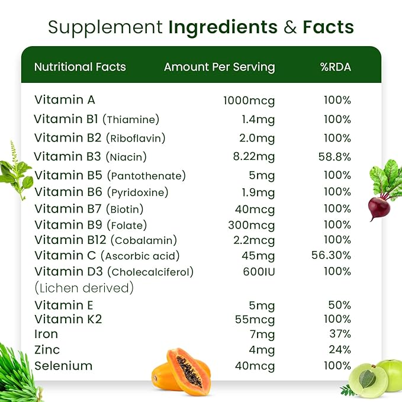

1- NON-GMO Super Daily Multivitamins Tablets Best For Adult Men Women Seniors With 42 Natural Fruits Vegetables Blend, 21 Essential Vitamins Minerals. 90 Tablets. Vegan Coating Made in USA
Multivitamins aims at solving the basic challenge of lack of proper nutrition. To tackle an unhealthy lifestyle and dietary habits, Oziva brings to you tailored natural solutions to simplify healthy living while helping you reach your health goals.
About this item:-
1.❤ BLEND OF ANTIOXIDANT-RICH FRUITS & VEGETABLES: Rich in vitamins, minerals and antioxidants fruits are not everyone’s favourite. They are sweet and tangy fun foods and can be easily neglected in a daily diet. But with Multivitamin 60+ you’ll never miss on to the fruity nourishment.There are common vegetables that you maybe able to incorporate in your daily diet but might not get the complete nutrients packed in it to give you boost of nutrients from the healthy veggies. ❤
2. ❤ HIGH BONE STRENGTH: The blend of essential minerals like Calcium & Vitamin D makes this a perfect way to build bone density while improving overall bone health. It perfectly fulfils vitamin deficiencies responsible for weak & unhealthy bones..❤
3. ❤ BOOSTS DAILY IMMUNITY: This supplement is fortified with some special immunity-boosting natural foods that strengthen your overall immune system. Multivitamins have multiple roles such as Vitamin C, being a powerful antioxidant, strengthens the body's ability to resist against diseases, Vitamin D & E prepares your body to resist infections, Vitamin A has anti-inflammatory properties, etc.❤
4. ❤ IMPROVED MUSCLE GROWTH: The specially formulated supplement strengthen bones & muscles to grow stronger & healthier gradually. The daily consumption of these capsules makes you stronger from inside, healthier outside!.❤
_______________________________________________________________________________________________________________________________________________________
Click here to buy :-

5 Benefits of Taking Multivitamins Daily
1.HIGH BONE STRENGTH
2. Improves Brain Function .
3. Keeps Heart Healthy.
4. Supports Eye Health.
5. Maintained muscle strength.
Important information...
Safety Information
ALLERGEN WARNING: CONTAINS SOY (LECITHIN), MILK (TRYPSIN), AND FISH. CAUTION: This product is manufactured and packaged in a facility which may also process milk, soy, wheat, egg, peanuts, tree nuts, fish and crustacean shellfish. KEEP OUT OF THE REACH OF CHILDREN. DO NOT USE IF SAFETY SEAL IS DAMAGED OR MISSING. STORE IN A COOL, DRY PLACE.
Ingredients
moringa, wheat grass, alfalfa, green amla, mint, coriander leaves, Basil leaves, liquorice, spirulina, radish, garlic, pumpkin, cumin seed, onion, flax seed, jimikand, neem, giloy, burdock root, barley grass, bitter gourd, cabbage carrot tomato, curry leaves, potato, cauliflower, gokhru, ashwagandha, kalijiri, Turmeric, kalmegh, ajwain, ardusi, spinach, beetroot, garcinia cambogia, papaya, lichen, stevia leaves, shatavari root, Noni Fruit, Goodmar, okra, tamarind, drumstick, brahmi, manjishta, daru haldi, sweet potato, chitraka, fenugreek leaves, celery leaves, vidanga, arjun, aloevera.
SUGGESTED USE: 1 tablet taken 1 to 3 times daily preferably with meals or as directed by a healthcare professional.
Legal Disclaimer
Statements regarding dietary supplements have not been evaluated by the FDA and are not intended to diagnose, treat, cure, or prevent any disease or health condition.